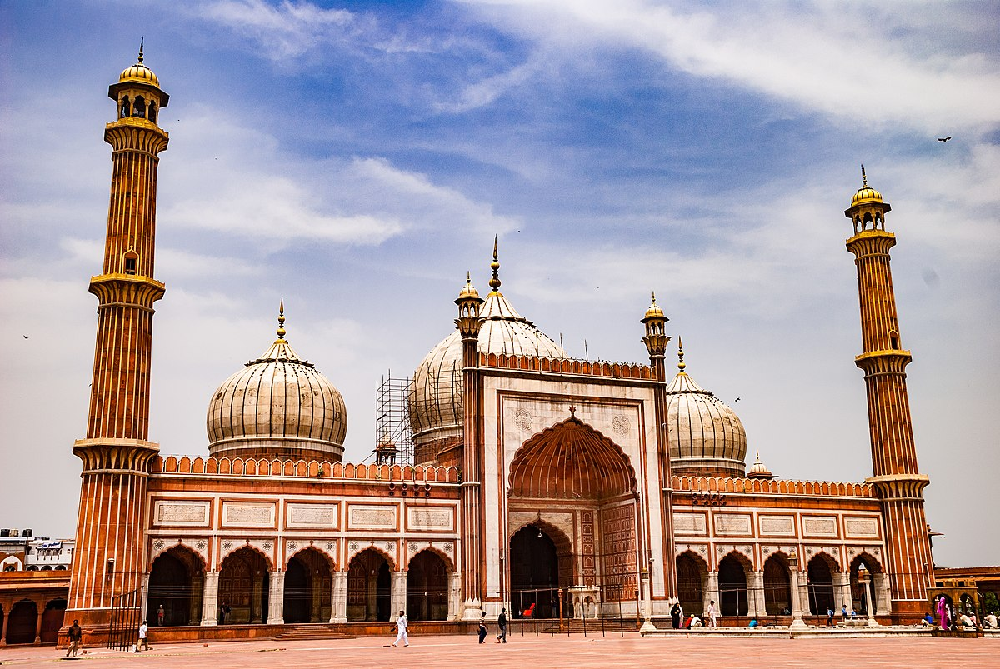

2. India Gate

History: Built in 1931 as a war memorial honoring soldiers of the British Indian Army who died in World War I.
Architecture: A 42-meter-high arch with the Amar Jawan Jyoti (eternal flame) beneath it.
Best Time to Visit: Evenings for a lively atmosphere with illuminated surroundings.
Key Tip: Combine with a stroll along Rajpath for picturesque views.
3. Lotus Temple

History: Opened in 1986, it is a Bahá’í House of Worship promoting unity and peace.: The temple embodies the Bahá’í faith's principles of unity, inclusivity, and harmony, welcoming people from all religions to pray and meditate in peace.
Architecture: Shaped like a lotus with 27 marble petals surrounded by water pools, creating a serene atmosphere.It has won numerous architectural awards and has become a prominent symbol of secular spirituality and modern architecture.
Best Time to Visit: Evenings for beautiful lighting; October-March for pleasant weather.
Key Tip: Closed on Mondays; maintain silence inside.
4. Akshardham Temple
History: Opened in 2005, Akshardham Temple is a spiritual-cultural complex dedicated to Swaminarayan. It showcases India's ancient traditions and values.
Architecture: Built using pink sandstone and white marble, it features intricate carvings, domes, and sculptures of deities, flora, and fauna. The central shrine houses Swaminarayan's idol, surrounded by 234 ornately carved pillars and 148 lifelike elephants.
Best Time to Visit: October to March (pleasant weather). Evenings are ideal for enjoying the musical fountain show.
Key Tip: Closed on Mondays; entry is free, but there are charges for exhibitions and shows.
5. Gurudwara Bangla Sahib

History: Built in the 18th century, it commemorates Guru Har Krishan, the 8th Sikh Guru, who served during a smallpox and cholera epidemic. Originally a royal bungalow (Bangla), it became a place of worship after his death.
Architecture: Features a golden dome, a towering flagpole (Nishan Sahib), and a serene sarovar (holy pond) with healing waters. The interior is simple yet spiritually uplifting, adorned with Sikh scriptures.
Best Time to Visit: Early mornings or evenings for the peaceful atmosphere and kirtan.
Key Tip: Open 24/7, free entry. Wear modest clothing and cover your head (scarves provided). Enjoy the community meal (langar).
6. Rashtrapati Bhavan
History: Built in 1929 as the Viceroy’s House during British rule, it became the official residence of the President of India after independence.
Architecture: A blend of Mughal and European styles with 340 rooms, sprawling gardens (Mughal Gardens), and iconic domes.
Notable interiors include the Durbar Hall (used for official ceremonies) and the Ashoka Hall (decorated with Persian artwork).
The building symbolizes India's transition from colonial rule to democracy, blending Indian ethos with British architecture.
Best Time to Visit: February-March for the Mughal Garden bloom (open to the public during Udyan Utsav).
Key Tip: Online booking required for visits; plan in advance.
7. Jama Masjid

History: Constructed by Shah Jahan in 1656, it is one of India’s largest mosques.
Jama Masjid is one of India’s most significant mosques, symbolizing Mughal architectural brilliance.
Architecture: Made of red sandstone and white marble, it has three massive domes, four slender towers, and two towering minarets (40m high), with intricate calligraphy and carvings.
The large courtyard accommodates 25,000 worshippers.
Best Time to Visit: Early mornings for peaceful exploration; avoid Fridays(main prayer day) due to heavy crowds.
Key Tip: Dress modestly; women may need to rent robes. Climbing the minaret offers breathtaking views of Old Delhi’s bustling streets.
8. National Museum
History: Established in 1949, it is one of India’s largest museums, housing artifacts spanning 5,000 years of Indian history, from Harappan civilization to the modern era.
Architecture: A modern, multi-story building with over 200,000 artifacts, including sculptures, paintings, manuscripts, and relics.
Best Time to Visit: Weekdays for a quieter experience and more time to explore.
Key Tip: Explore the Harappan gallery, featuring seals and pottery, and the Buddha relics, housed in a serene golden chamber.
9. Dilli Haat
History: Opened in 1994, Dilli Haat was created to provide a vibrant space for showcasing Indian handicrafts, art, and regional cuisines.
Architecture: Styled like a traditional Indian village, it features thatched roofs, craft stalls, and open courtyards, blending rural charm with urban convenience.
Best Time to Visit: Evenings for cultural performances and a cooler atmosphere; visit during festivals for thematic displays and unique crafts.
Key Tip: Don’t miss sampling dishes from the regional food stalls, offering diverse culinary flavors from across India.
10. Jantar Mantar

History: Built in 1724 by Maharaja Jai Singh II, Jantar Mantar served as an observatory to study astronomical phenomena and improve calendar systems.
Architecture: Features massive geometric instruments like the Samrat Yantra (a giant sundial), Misra Yantra, and others for measuring time, tracking stars, and predicting eclipses.
Best Time to Visit: Early mornings or late afternoons for pleasant weather.
Key Tip: Pair your visit with Connaught Place, a nearby hub for shopping, dining, and exploring urban Delhi vibes.